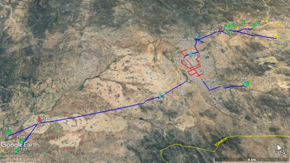
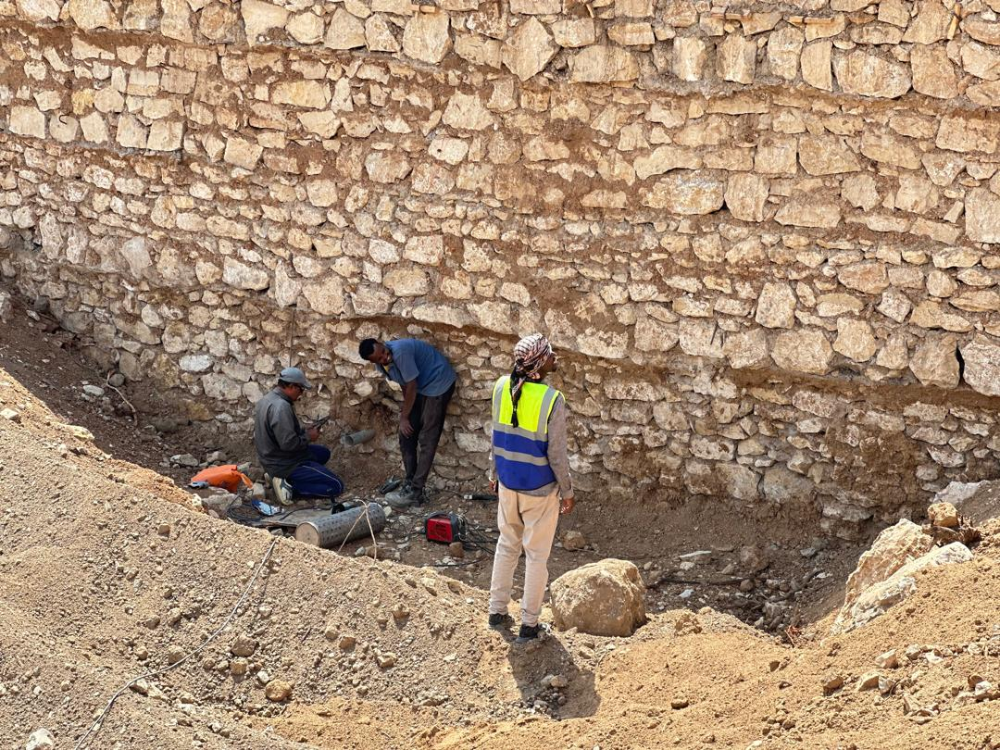

A clear project title
Describe the work, its location, and its verified status. Use real details when this component becomes a published project.
Review the type scaleA design direction for Shaba
A clear, confident presence for a company serving its community and working with public institutions and NGO partners.

Forest green and navy connect the interface to the existing identity. White and pale surfaces give the content room to breathe.
#145A46#153E68#172E2A#526762#FFFFFF#E8F1EDA publication card and editor controls show how one visual language can support both the public website and the admin workspace.

Describe the work, its location, and its verified status. Use real details when this component becomes a published project.
Review the type scaleThis is an editable design sample; nothing is saved.
The live implementation starts with Mulish. This offline sample uses the system fallback to keep the preview independent of font downloads.
Service with purpose
Body text has a comfortable reading width and generous line-height. The visual hierarchy should help residents find service information and institutional partners understand the company’s capabilities.